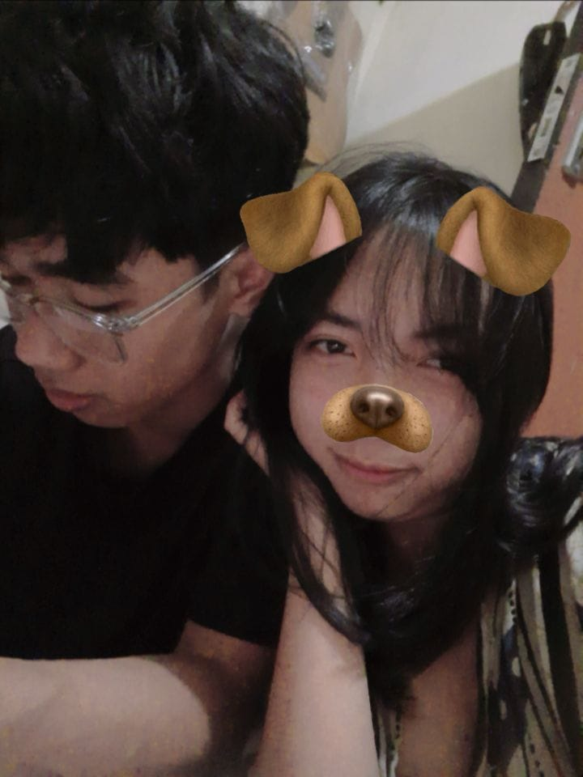

FOR MY FAVORITE PERSON
Happy 19th Birthday, Sayang ❤️
Hari ini adalah hari spesial seseorang yang sangat berarti buat aku.
📸 Our First Photo Together
Maybe it's just one photo, but it's one of my favorite memories. ❤️

Mungkin ini baru satu foto yang kita punya bersama, tapi buat aku foto ini punya cerita yang spesial.
Dari pertama kali kita jalan bareng ke pantai, sampai akhirnya kita punya foto ini. 🌊❤️
Aku berharap ini bukan menjadi satu-satunya foto kita bersama. Semoga nantinya kita bisa punya lebih banyak foto, lebih banyak cerita, dan lebih banyak kenangan yang kita buat bersama.
19 Things I Love About You ❤️
19 years of you, and somehow I still find more reasons to love you every day.
Your Smile 😊
Salah satu hal yang selalu berhasil membuat aku bahagia adalah senyummu. Entah kenapa, setiap kali kamu tersenyum, semuanya terasa sedikit lebih indah.
Your Laugh 🥰
Tawamu adalah salah satu suara
favoritku. Setiap kali mendengarnya,
aku ikut merasa bahagia.
Bahkan ketika hariku sedang kurang baik,
melihat atau mendengar kamu tertawa
bisa membuat semuanya terasa lebih ringan.
Your Kindness 🌷
Salah satu hal yang membuat aku semakin
sayang sama kamu adalah kebaikanmu.
Cara kamu memperhatikan orang lain
dan memperlakukan mereka dengan tulus
membuat aku sadar kalau kamu punya
hati yang sangat baik.
Mungkin buat kamu itu hal biasa,
tapi buat aku, melihat sisi itu dari kamu
selalu membuatku merasa bangga bisa
memiliki seseorang seperti kamu.
Your Voice 🎵
Aku suka mendengar suaramu,
bahkan ketika kamu hanya bercerita
tentang hal-hal kecil.
Ada sesuatu dari suaramu yang selalu
membuat aku merasa tenang.
Kadang aku tidak membutuhkan nasihat
atau kata-kata panjang.
Aku cuma ingin mendengar kamu berbicara,
karena entah bagaimana, suara kamu
bisa membuat semuanya terasa sedikit lebih baik.
Your Personality 💕
Aku jatuh sayang bukan hanya karena
satu hal dari kamu, tapi karena seluruh
kepribadianmu.
Kamu bisa menjadi dewasa ketika dibutuhkan,
bisa sangat lucu sampai membuatku tertawa,
dan bisa begitu ceria sampai suasana
di sekitarmu ikut berubah.
Aku suka semua sisi itu.
Bahkan sisi kamu yang mungkin menurutmu
kurang sempurna pun tetap menjadi bagian
dari kamu yang ingin aku kenal dan aku sayangi.
Your Care ❤️
Perhatianmu mungkin sering datang dari
hal-hal kecil, tapi justru hal-hal kecil
itu yang paling aku ingat.
Saat kamu menanyakan kabarku,
memastikan aku baik-baik saja,
atau sekadar mengingat sesuatu tentangku,
dari sana aku tahu bahwa aku benar-benar
berarti buat kamu.
Dan jujur, perasaan disayangi oleh seseorang
yang aku sayangi juga adalah salah satu hal
paling indah yang pernah aku rasakan.
Your Patience 🌸
Aku tahu aku bukan seseorang yang selalu
mudah untuk dipahami.
Ada saatnya aku melakukan kesalahan,
membuatmu kesal, atau mungkin tanpa sadar
membuatmu kecewa.
Karena itu aku sangat menghargai
kesabaranmu. Terima kasih karena tidak
langsung menyerah ketika menghadapi
sisi diriku yang tidak sempurna.
Your Hugs 🫂
Ada sesuatu yang berbeda ketika aku
berada dekat denganmu.
Rasanya seperti aku bisa berhenti
memikirkan banyak hal untuk sementara
dan hanya menikmati keberadaanmu.
Kalau suatu hari nanti aku sedang lelah
dengan semuanya, aku berharap masih ada
tempat di dekatmu yang bisa membuatku
merasa tenang.
Your Presence ❤️
Aku akhirnya mengerti bahwa seseorang
tidak harus melakukan sesuatu yang besar
untuk membuat hidup kita menjadi lebih indah.
Terkadang cukup dengan hadir saja
sudah berarti banyak.
Begitu juga dengan kamu.
Kehadiranmu mungkin terlihat sederhana,
tapi sejak kamu hadir dalam hidupku,
ada banyak hari yang terasa lebih berwarna.
Our Memories 📸
Kalau suatu hari nanti kita sudah
melewati banyak tahun bersama,
aku ingin tetap bisa mengingat awal
dari semuanya.
Aku ingin mengingat bagaimana kita mulai
membuat cerita kecil kita sendiri.
Bahkan perjalanan pertama kita jalan
bersama ke pantai menjadi salah satu
kenangan yang aku simpan dengan baik.
Mungkin bagi orang lain itu hanya
perjalanan biasa, tapi buat aku,
itu adalah salah satu bagian dari cerita
kita yang ingin selalu aku ingat.
🌊❤️
The Little Things 🌷
Mungkin kamu nggak sadar berapa banyak
hal kecil tentangmu yang sebenarnya
aku perhatikan.
Cara kamu berbicara, cara kamu tertawa,
cara kamu merespons sesuatu, bahkan
kebiasaan kecil yang mungkin menurutmu
tidak penting.
Tapi justru dari hal-hal kecil itulah
aku semakin mengenal kamu.
Dan semakin aku mengenalmu,
semakin aku menemukan alasan baru
untuk menyayangimu.
Your Strength ✨
Aku tahu hidup tidak selalu mudah.
Akan ada hari ketika kamu merasa lelah,
kecewa, atau merasa semuanya terlalu berat.
Tapi aku ingin kamu tahu bahwa aku
percaya kamu jauh lebih kuat daripada
yang kamu pikirkan.
Aku ingin melihat kamu terus tumbuh,
semakin dewasa, mengejar apa yang kamu
impikan, dan menjadi seseorang yang
kamu banggakan sendiri.
Dan kalau suatu hari kamu merasa lelah,
aku berharap kamu ingat bahwa ada
seseorang yang selalu percaya kepadamu.
The Way You Love Me ❤️
Cara kamu menyayangiku adalah sesuatu
yang tidak pernah ingin aku anggap remeh.
Setiap perhatian, setiap kata,
dan setiap hal kecil yang kamu lakukan
selalu memiliki tempat tersendiri
di hatiku.
Aku mungkin tidak selalu pandai
menunjukkan betapa berartinya semua itu,
tapi percayalah, aku merasakannya.
Aku berharap aku juga bisa memberikan
rasa aman dan bahagia yang sama seperti
yang kamu berikan kepadaku.
Your Honesty 💗
Aku percaya hubungan yang benar-benar
berarti tidak hanya dibangun dari rasa
sayang, tapi juga dari kejujuran
dan kepercayaan.
Karena itu aku menghargai setiap kali
kamu mau terbuka kepadaku.
Aku ingin kita bisa menjadi tempat
satu sama lain untuk bercerita
tanpa takut dihakimi.
Aku ingin kita bisa saling percaya,
bahkan ketika keadaan tidak selalu mudah.
Being Yourself 🌸
Aku tidak menyayangimu karena kamu
harus menjadi sempurna.
Aku menyayangimu karena kamu
adalah dirimu sendiri.
Dengan semua kelebihanmu,
kekuranganmu, sisi lucumu,
sisi dewasamu, bahkan hal-hal
yang mungkin kadang membuat kita
berbeda pendapat.
Kamu tidak perlu menjadi orang lain
supaya layak disayangi.
Buat aku, kamu yang apa adanya
sudah cukup. ❤️
Our Journey 🥹
Kalau aku melihat kembali perjalanan
kita sampai sekarang, aku sadar bahwa
setiap hubungan pasti punya cerita
dan prosesnya sendiri.
Ada tawa, ada kesalahpahaman,
ada momen bahagia, dan mungkin akan
ada banyak hal yang harus kita lewati lagi.
Tapi aku ingin terus berjalan.
Aku ingin melihat sejauh apa cerita kita
bisa berkembang.
Semoga suatu hari nanti kita bisa
melihat kembali semua ini dan tersenyum
karena ternyata kita berhasil
melewati semuanya bersama.
Every Moment With You 📸
Aku belajar bahwa kenangan tidak selalu
harus berupa sesuatu yang besar.
Terkadang hanya duduk bersama,
berbicara tentang hal random,
tertawa karena sesuatu yang tidak penting,
atau sekadar menghabiskan waktu bersamamu
sudah cukup untuk menjadi kenangan
yang aku simpan.
Karena yang membuat sebuah momen
terasa spesial bukan selalu tentang
apa yang kita lakukan,
tapi tentang dengan siapa aku menjalaninya.
Dan aku selalu senang ketika orang itu
adalah kamu.
Because You're You ❤️
Kalau seseorang bertanya kepadaku,
"Kenapa kamu begitu menyayangi dia?"
mungkin aku akan kesulitan memberikan
satu jawaban.
Karena semakin aku mengenalmu,
semakin banyak alasan yang aku temukan.
Aku menyayangimu karena perhatianmu,
karena tawamu, karena caramu membuatku
nyaman, karena kebaikanmu, karena semua
cerita yang sudah kita lewati,
dan karena kamu selalu berhasil menjadi
seseorang yang ingin aku temui lagi
dan lagi.
Tapi pada akhirnya, mungkin alasan
yang paling sederhana adalah ini:
Aku menyayangimu karena kamu adalah kamu.
Aku tidak tahu bagaimana perjalanan
kita ke depannya.
Tapi untuk sekarang, aku ingin menikmati
setiap langkah yang kita jalani bersama.
Aku ingin membuat lebih banyak kenangan,
mengambil lebih banyak foto,
pergi ke lebih banyak tempat,
tertawa lebih banyak,
dan tumbuh bersama.
Dan di umurmu yang ke-19 ini,
aku cuma punya satu harapan untuk kita:
Semoga kamu tetap menjadi sayangku,
dan semoga aku masih menjadi orang
yang kamu pilih untuk berjalan bersamamu. ❤️
Kamu sudah membuka semua hadiahnya...
To My Sayang ❤️
Happy 19th Birthday, sayang. 🎂❤️
Selamat ulang tahun yang ke-19, sayang. Hari ini adalah hari spesial buat kamu, dan aku cuma ingin kamu tahu kalau aku benar-benar bersyukur bisa mengenal dan memiliki kamu di hidupku.
Aku suka banyak hal dari kamu. Aku suka bagaimana kamu selalu perhatian, bagaimana kamu bisa menjadi seseorang yang dewasa dan pengertian, tapi di saat yang sama tetap lucu dan ceria.
Kamu punya cara sendiri untuk membuat aku tersenyum, bahkan dari hal-hal kecil. Dan mungkin kamu nggak selalu menyadarinya, tapi kehadiran kamu benar-benar berarti buat aku.
Salah satu kenangan yang paling aku ingat adalah saat pertama kali kita jalan bareng ke pantai. 🌊❤️ Sederhana memang, tapi entah kenapa momen itu menjadi salah satu kenangan yang ingin selalu aku ingat.
Aku berharap di umur kamu yang ke-19 ini, kamu bisa menjadi semakin dewasa, semakin kuat, dan tentunya semakin sukses. Semoga semua impian dan hal-hal yang kamu inginkan bisa tercapai satu per satu.
Aku juga berharap kamu selalu bahagia, selalu menjadi diri kamu sendiri, dan tetap menjadi sayang yang aku kenal.
Dan satu hal yang paling aku harapkan... semoga kamu selalu sayang sama aku, seperti aku yang akan selalu berusaha menyayangi kamu. ❤️
Terima kasih sudah hadir dalam hidupku, terima kasih untuk semua perhatian, tawa, cerita, dan setiap momen yang sudah kita lewati bersama.
Semoga setelah umur 19 ini, kita masih bisa membuat banyak kenangan baru bersama. Bukan cuma hari ini, tapi juga di hari-hari yang akan datang.
I love you so much, sayang. ❤️
With all my love,
Wisnu ❤️
Klik amplopnya 💌